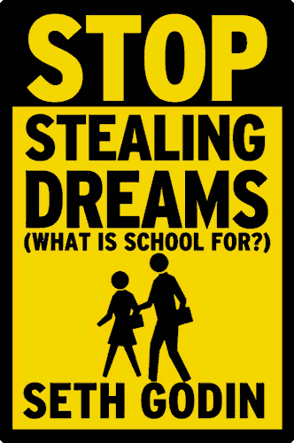

Twenty Books Changed my Life
Introduction
There is no easy way to shill reading; you either like it or you don’t, and if you don’t, you likely never will. No artful persuasion, no table of benefits, can adequately bring forth the intimacy and excitment one earns from being imbued with earthly knowledge and having it done with the beautiful manipulation of our language. It rewards you for deep thought and it punishes you for any lapse in concentration. It expects more of natural faculties than any other medium, and as a result, we find that those who read as much as they can are the most brilliant of us, and those who shun it have chosen to be lesser human beings.
I’m a writer; if you don’t read as a writer, you’re dead. Not just for prose. If you don’t have the intelligence and wit to write logically and persuasively, you will only be read by those who lack what you lack. I’m also a lot of other things, all of which I can describe, though mostly I am human, and so I can enjoy a lot of little hobbies without needing to exposit them. I’m a designer and a typographer and a critic and a gamer and a whole hell of a lot of other things needed to bring this website to you. Specialisation, after all, is for insects, and I didn’t just get these skills by being born with them. It was by reading those who are better than me that I earned them. The results speak for themselves, I believe.
I didn’t compile this list to sell you prolefeed with Amazon kickback links or to manipulate Google into making my website 1‱ more popular by virtue of having a number in the title. Astute readers will know this is an obtensely indie – games related blog, and an article like this is more suitable to a soccer mom’s daily living blog. But I have felt for a while it’s only fair to discuss how I got here, how I managed to have such excellent opinions, and how I manage to push words on the screen to make it happen. All of this I believe came from both practice and study. I can’t help you with the practice; it’s as simple as making things by yourself. I can, though, help you with the study. Hence the books.
I compiled this list so that you, given some time and patience, can learn some of the same things as I know. It’s selfish to know things and not teach them given the opportunity. Although I could believe I’m holding your face under the putrescent waters of knowledge and forcing you to drink deeply until you reach Nirvana, ultimately it’s your choice whether you want to be more like yours truly, for better or for worse. But enough patter, here’s the good shit you’re after.
The criteria
I like looking at lists of books. Not because I’m smug and am trying to see how many I’ve read, because I’ve read surprisingly view of the “must – read” books, for classics are what people praise without reading — like Mark Twain, for instance, which I have read and found infantile in his prose. Hemingway says he invented American literature, but then Hemingway isn’t so hot either; perhaps he never learned how to use a colon and crutched on periods instead. No, I like looking at them so I can understand the benefits they might bring me if I read them. Also, to see if the list creator is a dirty little liar and is promising too much good out of a very bad book, too inexperienced to see its flaws.
No more! All of the books on this list I have hand – selected to make sure they are not only insightful, they are readable. A book you do not enjoy reading is a paperweight centered vertically, slotted among other paperweights in a structure you call a bookshelf. I don’t care if Plato was the cradle of Western philisophical discourse. He’s just so damn boring! This might seem to be infantile in my own way, caring about how someone writes instead of what they write about. Let me be honest. An author’s audience is an extended privilege and by no means a right. If they don’t keep my attention? If my time with them isn’t worthwhile? Then they are no longer an author. Just a dude with some words printed on dead trees.
This is also not the time for mindless pleasure, with teenage rumble novels and sultry titty books where the conventionally – attractive young – adult badass female protagonist kills a bunch of zombie faerie vampires only to fall in love with the badass conventionally – attractive young – adult male best friend and then fuck until they cry. I’m not ashamed to admit I can like trash, if they read well and have a decent story. Everything on here was chosen, specifically, to make you a better person, so that you can be that conventionally – attractive young – adult badass, too.
For ease of reference I’ve divided these twenty books into four sections — or benefits, if you will. Based on my fourth – grade education, I believe this makes five books a piece. They are roughly ordered from the ones I consider most to least beneficial in their fields, but this is not to denigrate any other book on this list — they are all excellent.
• Self teaches you to respect yourself and to dwell on the fundamental tenents of our being, especially with how mortal, how fragile we are.
• Spirit makes you feel angry, inspired, despondant, primal, and a whole bunch of other complex emotions that will kick your ass and make you want to make something of yourself.
• Smarts teaches you how to use your intelligence and natural charms to make yourself smarter, more persuasive, and more respected by your fellow man by using psychology, which, as practical as it may be, is evil.
• Society gives us a little perspective about this big, stupid world we live in. There is too much to talk about and so much to read, so I can only give you the basics. The goal is not to instill hopelessness but to instill nihilistic satisfaction; things are bad, but they’ve always been bad, so fuck it.
I don’t claim any of these to be the best books in their field; only what I have read personally, and what I credit for having grown as a person. As a bonus, for the first and only time in Kratzen’s history, I’m serving up colour photographs of the covers, so long as you right – click and select “View Image”. But be careful! Colour may be used for identification, but too much colour will make you aware the world isn’t all in shades of grey, instead making a beautiful rainbow of every colour on the spectrum, because we are all equal on this green Earth. Except for black. Black isn’t a colour.
Self
A Guide to the Good Life

If you read one book, read this one. And don’t just read it — follow it. Allow it to fill your every pore with its ideas, for though they are old ideas, they are wise ones. The subtitle is “The ancient art of Stoic joy”, and though I do not feel, as is the goal of the book, a constant well of tranquil peace, I feel more content, more appreciative, and more aware of the world around me than I ever had before.
Roman Stoicism died around 300 CE and for the next 1,700 its ideas has been parasited by other philosophies and religions, never quite as useful as its original incarnation. It teaches that the greatest good is to be good to ourselves, and we achieve that by being good to others. We find contentment in ourselves by appreciating all that we have, never wanting, and we end up happier for never wanting. By freeing ourselves from the chains of desire, we may enslave it instead, appreciating what the world gives us without being obliged to partake in its mindless pleasures. This simplification underlines a mosaic of history and thought, where big ideas are made practical through simple psychological tricks, and where all who adhere to it find themselves richer in every way.
This is not your typical feel – good inspirational glurge; for one, it’s published by Oxford, who has no time for such nonsense. Two, William is a B.A., M.A., and a PhD around math and philosophy; though university as an intitution is extremely questionable, he is a fair writer and a smart man. He compiles all the ideas of all the ancient Stoics and leaves only the most brilliant ones for your perusal. Although Stoicism has only a cult following these days, it might be one of the only cults that deserve to exist. But only, you see, if you wish to follow it for yourself, and not for the sake of being trendy.
Linchpin
Seth has written more books than me or you, regardless of who we are. Most of them are inspirational tracks that have the benefit of actually being inspired. He’s famous for simple prose that uses a lot of periods and a lot of line breaks; most of his writing reads like koans. I admire him in spite, or perhaps because of, his peaceful, reassuring way of looking at things. But I admire him even more for books like Linchpin, where he is not only trying to make you stop being such a sack of shit, you can also feel he’s tired of being nice while doing it. Seth Godin is at his greatest when he’s pissed. There is only one other book where he is more pissed, and it is later in this list.
In a marked depature from his marketing fare, where he has a lot of good ideas but without the scientific evidence to support them, Linchpin is where he takes everything he’s learned over his years of authorship and puts them all on display for you — yes, you! — to either learn from it or to ignore like you’ve always done. But it’s not your fault that you’re lazy, he argues. Society, evolution, status, modern living, and the sheer difficulty of being somebody worth writing about are all reasons why you’ve never been somebody special, and why you’ve never gotten recognition for the talents you most certainly have. How do you beat the odds when everything is stacked against you? There’s no magic bullet, and no easy answers. But at least trying is better than nothing at all.
“At the age of four, you were an artist. And at seven, you were a poet”, says he. What happened to us? Did the world crush our spirits, and turn our carefree childhood into mature malaise? Yes. Yes it did. This book is seven years old, and I read it four years ago. Before this, I had felt that malaise that we too often feel, like we’re worthless, like we should be doing more with ourselves, like we should be writing the Anthem of a Generation or whatever the fuck our stupid dreams are. But they aren’t stupid; not if you make them happen. And I did, as those four years crawl on, more or less made them happen. I’m not famous, and I’m not rich. I am, however, somebody now. And that wouldn’t have happened if Seth didn’t care enough to make scrubs like me a little less scrubby.
Every Day is an Atheist Holiday!
This isn’t a book about religion — at least nominally. There’s the usual Penn and – only – occasionally Teller wisdom, in that religion, for lack of better words, is bullshit, and that basically, you’re a fucking idiot. But this isn’t like a Dawkins or Hitchens book where you’ll be reading the next three hundred pages of logically – sound, scientifically – based good – old – fashioned facts that zealots, most often Christians, are free to ignore. This book is more comparable to Douglas Adams or Monty Python. There are tracts against religion, but it’s a small theme compared to the sheer amount of stories that Penn tells here. God knows why he names his books this way, much like his previous book, “God, No!”.
Once you get past the hurdle of rich and famous people like Penn and Friends having more privileges and therefore more opportunity for experiences than us disgusting, filthy proles down here in the slums of classist society, everything he talks about is a topic of some interest, a topic of some knowledge, and something that we, too, can learn from given the choice. Here’s a small sampler of his wisdom:
• The time he argued with Disneyland to get a brick with “NO GOD” implanted in their boardwalk.
• The time he was on The Apprentice and had to sit there while Trump denigrated him.
• The time Penn and Teller got naked on stage, inspired by a quote about artistis figuratively being naked on stage and having to bear their souls to the audience.
• The time he was blackmailed by someone who got naked pictures of him off the stage. Was this the inspiration for his article denouncing Celebgate?
• A eulogy for his friend’s dead mother and a passage about his own dead mother.
• A eulogy for his dead drummer friend.
• Eternity being a really long time and how getting blowjobs while listening to Bob Dylan for all eternity would quickly turn Heaven into Hell.
• Talking about old – timey variety shows and how they would practice literally thousands of times in order to make sure each performance was as perfect as could fit into the definition of perfect, talking about how simultaneously mad and fascinating it is to practice for that long.
• How he doesn’t drink any alcohol at all and one of his best friends brought wine to his house and how they stared each other down at the door before dropping the bottle in the archway.
• How religion is inherently coercive, giving examples of people saying he’ll convert on his deathbed, where the idea that this is an option shows how religion preys on our deepest fears for profit.
• Various shilling for Frank Zappa, Bob Dylan, and other dad – rock musicians.
• An inordinate amount of emotion and nudity for what the cover and title suggests.
• And featuring surprisingly little libertarianism. Phew! Thought he lost me for a second!
This shit is fascinating. There are so many ideas about what it means to be an artist, what it means to be alive, and what it means to even exist at all that it’s amazing a book like this, so sporadic and yet so insightful, can even be published at all. How does one remember anything that happens in their life? Do some people try to remember what happened in the past, rather than allowing the present to take them forever? And how does one have so much happen to them that they can compile it all into something like this? I never tell stories about myself; I don’t think you’d care about them, mostly because I don’t care either. But what Penn has done here is make something magical in its breadth. Perhaps it really is an atheist holiday after all.
Tuesdays with Morrie
Yes, the book so infamous it got jokes on both Family Guy and The Zombie Simpsons Movie. I’m not snobby enough to hate something just because it was, at some point in time, popular — only if I feel the popularity was because of lowest – common – denominator prats or if I have to bear witness to it all the damn time, see Overwatch and Overwatch. I’m also not the type of person to like something just because a bunch of other people like it; independent thought is a disability of mine. But what I do like is seeing some of the Goodreads reviews on Tuesdays with Morrie:
• “If I dated a girl who had this book on her bed table I would probably escape by jumping out her third story bathroom window. It would creep me out, like when that girl saw the fingernails on the wall in Silence of the Lambs.”
• “Recommends it for: total idiots. I’m ashamed to own that I’ve read this. All I can say is: I did it for a good cause.”
• “Literary fiction is a wonderful genre, but literary fiction shouldn’t tell the reader outright there is some lesson to be learned. It should be the same with non – fiction as well. In this story, the message is one of those direct, sappy ones: surround yourself with loved ones and know what is important, and don’t get caught with money and business. We have heard that a million times! Worse, he doesn’t write it in a more creative way that we have heard it in the past.”
• “Of all the glorious books out there my school could have picked for ninth grade literature class…”
Oof. Indeed, I did read this book in the ninth grade. Not because the school forced me to; there were many books I was obliged to read that never struck me to my soul, like “In The Heat of the Night”, or “The Outsiders”. But because it happened to be in the English teacher’s bookshelf, and they revived silent reading for high school in one of the few virtues of our education system. As early as the third grade I was reading books in class instead of caring about whatever the teacher was saying, only to be punished for pursuing my own hobbies and trying to make my own education. But even over the years, nothing really stuck with me; not even the classics like The Wizard of Oz or Anne of Green Gables.
Maybe Tuesdays with Morrie struck a chord with me because it was the first book I read that went into such detail about mortality. An old guy is dying, and you get to see the details. You see that perspective that so few people have when you’re at Death’s door and you realise just how foolish so much of what we live for actually is. It’s about finding the understanding that there really only is one life, and that if we don’t make something of it, then that’s that. No second chances. No elbow room. And maybe this book is preachy in its ways; I don’t remember all those years ago. But it’s perhaps the first book I remember reading that really changed my perspective on life, and for that, I consider it special.
Work is Hell
Matt Groening asks us a simple question with this short anthology: is work hell? Yes. Yes it is. The entire Life in Hell comic series already tells us the answer to whether life is hell, because frankly, we all know it is. It’s petty, frustrating, upsetting, unanswerable, unaccountable, and really just poorly – designed and overall unintuitive. Many comics try to make a big drama out of our lives, making a big show out of how stupid and silly it can all be. But let’s face it: if our lives really were dramas, we wouldn’t have to work so hard to fictionalise them, and it would be a breeze to make silly rabbit comics.
What Matt has done here is spectacular. He doesn’t make a big deal out of this whole living thing, man. He doesn’t offer any great words to live by, or any incisive insights for us to spend the rest of our waking lives thinking about. His silly rabbit comics, much like us, show up on the page, unceremoniously close, have some laughs, have some good cries, and end up realising nothing much mattered at all. But there’s something there, isn’t there? That indescribable spice that makes trudge on regardless? Maybe it’s pleasure. Maybe it’s pleasure derived from pain. It’s dirty and gritty and grimy and ugly, but you’re here anyway. Better recount it all, even if we don’t understand it. Heck, because we don’t.
That’s what Life in Hell is about, and there’s no format in which you’ll be able to read all the comics, for it is now dead. Work in Hell was my introduction to them; the pristine, crispy bits of reading them on the screen is no match for picking this water – damaged bint up for two bucks at a yard sale and feeling the full impact of reading this thing on a shag carpet in your dirty and dilapidated 1970’s basement. If anything, you should read it for its honesty. There is a marked lack of bullshit in this book, and even in an era full of bullshitters, it’s refreshing to see it all laid out in black and white just like so.
Spirit
Good Poems
The title is too modest; they’re great poems, perhaps held back by British humility and the need to avoid overselling the dismal reality of poetry. To wit, it’s all bad. Most of it. The sterotype of poems being dense, unreadable globs of Old Modern English that expressed long – dead ideas about long – dead men has haunted it ever since its inception some ten billion years ago. Now poetry is for those Tumblr teenagers who blog about being gay and are offended over whatever irrelevent cultural kerfluffle is being shamelessly milked by Buzzfeed for cynically – manipulative clicks.
I used to hate poetry, how small they are for what feelings they express, how pretentious the authors are for thinking that flowery formatting makes for better prose. I’m right on the pretention but wrong on the feelings. I still hate bad formatting, bad spelling, bad grammar, bad capitalisation; poetry is a wasteland where sensible rules are thrown away for the sake of expressing, like, those intangible emotions, man, that don’t obey your rules. But I like the poems here, for though they are presumptuous as hell, they can invoke the imagination like nothing else I’ve ever read.
Spirit is what you feel when you have no idea how to describe what you feel. Good Poems makes me feel, and I know what it does. There’s sorrow, nostalgia, thought, calm, and however you describe eating scrambled eggs with burboun, which is apparently a Chicago jazz speciality and one of the reasons I hate Chicago. Many of the poems are discomforting to read, for they are like drugs. You can get hooked on feelings by reading poetry, making you long for more long after you’ve finished reading them the first time. Good Poems collects the good ones, and for anyone looking for some art to fall in love with, I suggest you look over here.
Stop Stealing Dreams

Having read this book as a morose high – schooler, I damn near dropped out. Despite all my charms, I am younger than you think; I had spent much of my teenage years getting “woke”, as the kids call it these days, and Seth’s manifesto about how fucked – up, how fundamentally broken, how anti – intelligence and how crassly bureaucratic our education system is, was the wokest awakening of them all. Our school system, even up here in sunny old Canada, was born out of capitalist desires: to make the workers of tomorrow, to do it in a reasonable amount of time, and to teach the essential life skills of subservience and obedience. Your teachers would disagree, but history is a bitch. I half – assed it for the rest of my short tenure at secondary school. Seth was sick of this shit, and so was I.
I took ninth grade metalworking by circumstance. The fifty – something rugby coach asked us what we thought school was for. Naïve little me said, “to get an education”. And he laughed his ass off. “No,” he said. “It’s so we get paid to babysit you while your parents are at work”. I didn’t see his wisdom back then, but now I know. What is school for? What do we learn? Why are we here? Why do we spend trillions — trillions! — propping up this decades – old institution, now archaic, that has failed utterly to adapt to the needs of the modern world? Can we live in a globalised market when school fails to teach us how? Can we justify the increasing costs of college tuition when jobs can be farmed out to the lowest bidder halfway across the world? Why are we paying for this shit? Why are our taxes paying for this shit? What’s the damn point of it all anyway?
There are no answers. The truth comes hard, and the hammer swiftly drops. School was built to control students and give power to the state. Most of our traditions comes from World War 2, where soldiers had to be pumped out quick and students were disposable if they weren’t of value. The institution exists as it does because nobody has bothered to change it. It’s one big idiocracy, and tens of millions are along for the ride. Is there anything of value? Basic science, literacy, math, all that fun stuff, sure. But beyond being a bare – minimum human being? Sorry, kid. You’re on your own, and school isn’t gonna help you learn what you wanna learn. There are too many people out there who refuse to read books. You can be one less loser by deciding to read this one.
You may legally download the screen edition or the print edition from Seth’s website. If you are in a formal education system, by choice or otherwise, this is mandatory reading. I don’t like to say you must do this or that, because it is very rare that you must do anything. But if you really give a shit about where you’re going and what your education is doing for you… it’s your choice.
The Jungle Book
Rudyard can write. I wish to write more like him. Within the bowels of every great book is a great author inside of it who not only has something to say, but has a particular way to say it that makes the reading of it all the worthwhile. He writes in a way that evokes so much with just a few sentences, making sweeping tales of adventure and wonder that nobody can quite emulate without losing that particular magic only particular people have. There may not be much to think about, but there’s a hell of a lot to remember, and it’s one of England’s finest books.
You know the Disney movie? It’s a piece of shit compared to this. There is nothing alike between the two, other than a few artifical similarities. The depth of character is gone. Mogli turned from a strong, feral man into a pussy – ass boy. The inner workings of the jungle, the democracy and political power struggles, and the understanding that we must kill each other to live? They’re gone. There’s no Rikki – Tikki – Tavi, although there was a Chuck Jones special. There’s no White Seal, either! I loved the White Seal! I loved how white the bastard was, how frozen the wastes he lived in was…
I loved a lot about this book. And I didn’t read it when I was a child. Here I am, a grown – ass adult, feeling for these furry animal creatures and how they live through their fundamentally fucked – up lives. I barely read fiction, but I know it’s value. I think too often that I can only ever learn from reality, and that fiction can only ever be a pale imitation. But I can be proven wrong many times, and this book proved me the wrongest. I would like to write more fiction. I have tried to write novels; they got too big, too fast. Rudyard knows how to tell short stories, and though they are short, they are as long as they need to be.
All I Really Needed to Know I Learned in Kindergarten
Is this what they mean by “saccharine”? A series of platitudes designed to inspire without providing an idea as to why? Maybe so, but at the same time, maybe not. Hmm…
It’s true that in our easy – feeling, self – medicating, don’t – feel – anything – you – don’t – have – to society, it’s easy to think, for us cynical bastards, that every book which tries to inspire hope and goodwill instantly belongs in the 017 prolefeed section of your local library, to be written only by charlatans and read by those who want easy answers and cheap ideas. On the other hand, we also live in an instant – outrage, omni – politicking, my – ignorance – is – greater – than – your – knowledge society, often switching between the two depending on our mood, and yet living between the lines of both, blurring into each other, providing no answers, nothing cheap – and – easy, and leading us into the sort of intellectual ennui we haven’t felt since the excesses of the Victorian Era.
Robert is a minister; the same people who peddle ease for the sake of profit. He is thus the perfect man to write this book. Much like Penn’s outing, this book lives and dies on the particular stories its tells, and although you may not find the ideas within as revolutionary, they are at the least easy to read and provide food for thought. The title essay is a list of suggestions for what we learned in Kindergarten and how to apply it to the real world. There’s a story about a particular steak that’s rather good while also ugly. There’s his defense of weeds and how he refuses to trim them despite his neighbour’s mockery. Mundane stuff like that; mumblecore before the word was invented, and before I could feel superior for mocking these depictions of reality.
But still. Something here struck me to my soul. There’s the spirit of stupid nostalgia lodged between these pages, taking residence waiting to be disturbed so it can share some of its nostalgic wisdom with you. Part of the etymology for “nostalgia” is “pain”, and perhaps when I first read this book in the latest hours of the night, I felt that bittersweet suffering, that realisation we cannot live in Robert’s world, instead of the selfish bitch – goddess that is life. Is it a pancea? A little something mindless to put our minds at ease? Perhaps. But I’m not so proud to admit I cannot enjoy it, and perhaps you may enjoy it, too.
How to Live on 24 Hours a Day
Are you aware that you’re dying? Or rather, as Art of Manliness asks: “As you look back on the year that has just past, do you feel as though you spent another 12 months merely existing instead of truly living? Do you often go to bed at night with an anxious, sinking feeling that you wasted away another precious day of your limited time here on earth?”. That used to be me, not too long ago. I used to while away my days on video games and anime, living hedonistically as the days of my life dwindled, making me older and yet not wiser, not even happy with what I have. Now I am happy, and I still do have my anime, but I spend far less of it wasted thanks to this book.
They don’t write books like they used to. My favourite prose comes from the early 20th century, in that brief period of time where writers were neither windbags nor shysters — at least, that’s my rosy – eyed interpretation. Men wrote back then like they had something to say, and when they said it, it remained said. Arnold is conversational without being patronising. He offers practical advice, practicable advice, and doesn’t make it boring like so much pragmatism. He even made the book short, to boot. In sum, he wrote to be read. How many authors show that level of gratitude? To show that they’re not the only one in the world reading their work?
You can lose all the money in the world and still earn it back. You can lose your house, your dignity, your family, and still recover with your chin up and your spirits held high. But the one thing that you can never recover? Your time. As AoM says again, for often they are a better hype man than yours truly: “This little book takes about 30 minutes to read, and is so incisive and clever that it moves along very quickly and enjoyably. It is truly just as relevant today as it was a century ago. As Bennett says, time is the most precious resource you have, and investing a half hour in reading this will prove incredibly worthwhile”. I can’t agree more. Read it, and you will find a newfound fire within you burning with the same restlessness as before. But this time? You’ll actually make something of yourself, instead of wasting your life angry and unfulfilled.
You can read How to Live on 24 Hours a Day on the quoted Art of Manliness article, where I discovered it. Or, you can choose a variety of downloadable formats on Project Gutenberg. It’s all legal; this book was written in 1910 and is part of the public domain.
Smarts
How to Win Friends and Influence People
This is a classic. It’s a book like classical music, house music, arthouse movies, animated movies, animated pornography, or pornography in general: you don’t know how great it is until you see it for yourself. Can one book contain so much wisdom, so much knowledge that all who read it but once will become, in an instant, the type of human being that other human beings want to be? Well, as the nineteen other books in this series show… yes. But this is an especially good one. Maybe one of the goodest. Certaintly, it made me gooder than I ever planned on being.
I believe this is the first book on this list I read, perhaps at thirteen or fourteen years old. Did I read it because of the title, expecting some amoral tech to manipulate all those who come near me? Yeah, but back then I was a twat. The book delivered the goods, but not the way I expected, and not the way you will expect. There’s no manipulation, no deft psychological tricks to bend people to your will at an instant. In the field of human – handling, you never get something for nothing. What there is, you must understand, is 300 – something pages of reinforcement for the one universal law: treat others as you would you. There are, of course, two sides to every story…
If the Golden Rule was easy to follow, we wouldn’t need this book. To the mature adult, dauntless in their adultness, such advice as “smile, don’t criticise, and don’t argue” seems rather basic — trite, even. I estimate most adults aren’t mature; humans are hard – wired to be twats the same as I was. People aren’t good at heart, as the past ten thousand years of history has shown. We must be taught to be, or else we, as Modern Man, would be the same self – destructive, fuck – you – got – mine animals as our ancestors were, and as many of us still are. Indeed, we still have traits of ancient Man lodged in our brain stems. The title, for instance, implies we can rule over others. Isn’t that appealing to our primitive minds? Isn’t “How to Win Friends and Influence People” a much more attractive title than “How to be a Pleasant and Enjoyable Person”?
Because that’s really all Dale wants us to do: be that type of person. The happy consequence is that, by following the advice he gives us (analysed over years of studying the most influential men of history, as the introduction tells me), we do end up more influential, and we do win more friends than if we were just our cruel, unthinking default. You see, the contradiction of Man is that, although we crave love and want people to care for us, we make ourselves so easy to be hated, just because of how we evolved. From selfish beast to selfless, slightly less hairy beast? That’s the real evolution right there.
If you read two books from this list, read this one second. A Guide to the Good Live teaches you how to respect yourself. How to Win Friends and Influence People teaches you how to earn the respect you deserve. But by the time you read the first book, you won’t care. Such are the wonders of education.
How We Learn
“And we must study through reading, listening, discussing, observing, and thinking. We must not neglect any one of those ways of studying. The trouble with most of us is that we fall down on the latter — thinking — because it’s hard work for people to think. And as Dr. Nicholas Murray Butler said recently, ’all of the problems of the world could be settled easily if men were only willing to think.” — Thomas J. Watson.
I’m not going to try to sell you the value of self – education. You either know it’s valuable, or you are one of the unfortunate human beings who will never reach the full potential their mind allows. I have spent literal years trying to make you smarter, giving you the truth as I see it, and helping you think about anything I felt was important enough to write. You are either innately fascinated with the idea of learning, or you half – ass it through the rest of your life.
I met this Greek guy a few years ago, as he was helping my dad out on some contracting work. Everyone called him Stephen, as us Irish bastards don’t have time for that foreign crap. His real name, which I remembered, rolled – R’s and all, was Stavros — the name of some saint, somewhere. He was impressed by this. Nobody calls him Stavros. So he asked me, “Alright, which do you like better: do you like learning, or do you like knowing?”. I thought about it, and said, “Well, I like to learn”. And he said to me “Kid, you’re going to go far in life”.
I’ve thought about that many times over the years, and though I still don’t know precisely what he meant, I can only agree that one of the most important things in life is having the desire to learn, and the ability to learn how to learn. This book, “How We Learn”, teaches you not only how to learn, but in fact, the precise physological, psychological, and evolutionary reasons as to why we learn at all.
The value in this book is in its information. I’ll make some points. If you want to learn exactly why these points are true… then read the bloody book:
• Learning large sets of data relies on a technique known as spaced repetition, discovered by some forgotten German psychologist. The short of it: use Anki. It is the single most effective tool you can use for learning anything you can put on flash cards. Foreign words, foreign countries, foreign flags, foreign anatomical pedantries. Anki has you covered.
• Dedicated learning areas with some background noise is markedly more effective than learning wherever the heck. Pure silence is the least effective way to learn. The brain craves stimuli, no matter how meaningless or nascent. You must oblige it, or it will create its own.
• Physically acting out knowledge in some capacity, such as through simulators, teaching knowledge, or just writing it down means your brain will remember it several orders of magnitude more than solely reading it or listening to it.
• State – based memory means associating a certain environment or feeling with a piece of knowledge will help you remember that knowledge when you relive that feeling or environment at another time. Yes, recreating a testing environment does help you study better. Who knew your teaches were right?
• Sleeping is basically a brain dump. You consolidate everything you learned, the brain flushes out irrelevent information, and you wake up more knowledgable than before. Seriously: you can’t argue with your brain. Go the fuck to sleep!
• Humans gobble up spacial memory like nobody’s business. If you can associate concepts with a location or a physical object, it’s stuck in your brain pretty much forever. We never forget, you see, with long – term memory. We just forget to remember what we’ve already learned.
• Exams aren’t evil. They can actually help us learn things better than a course that doesn’t have any exams. The problem is most teachers aren’t aware of the good they can do, and so assign them as just another bullet point to grade you arbitrarily on, for we all know your worth as a human is dependent on a two – digit number assigned to you along with 2,000 other yahoos.
As a bonus, it’s readable, too. Damn those journalists! Damn their good prose to Hell!
Read it. Love it. Be it’s bitch and be grateful to be. It may not make you smarter, but it’ll make you make you smarter.
Ogilvy on Advertising
Advertising is the art of convincing weak – willed human beings to buy products they don’t need with money they don’t have. It’s a cynical, manipulative industry, where consumerism meets mass media in a matrimony of lies. It preys on our deepest desires, our most basic emotions, throwing away our time and money to give away to anonymous suits who already have plenty of both. Learning to advertise is learning how to psycholigically manipulate people for your own personal gain. It is for this reason that you must learn the trade. Respect the trade. For if you don’t know each and every trick that’s being played off you, then you’ll be just another sheep in this great big herd that is capitalist society.
David is a brilliant writer. He writes like me, I like to think, and though he’s long dead, I’d like to learn from him. I also like to think, like me, he knows a little something – something about the human mind than many people don’t. He’s a scientist at heart, a bit of a psychologist, but he also appreciates the finer things in life, no doubt influenced by his classical education. And he knows how to persuade, as well — when he says something, it remains said, with a passive authority you don’t find in our present – day wishy – washy, either too – arrogant or ultimately unimportant marketplace of ideas. I like to think that great writers have an insight into the mind’s mechanisms that most people don’t, using words as a vehicle to drive points home like rivets into your skull. This insight, it turns out, is critical to advertising.
There is more practical advice on how to sell shit to people than in any other book I’ve ever read. Seth Godin? You’re great, you’re inspirational, you have a lot of good ideas. But you’re a bloody awful marketer, and David has you beat. The ideas in “Ogilvy on Advertising” are backed up by statistics, sober thought, and good – old common sense. He tries to offer up dignity to advertising, and he almost does in this book. He had me fooled for a while, there, too. One of the greatest quotes in the book is also, smartly, the very first one you read:
“I do not regard advertising as entertainment or an art form, but as a medium of information. When I write an advertisement, I don’t want you to tell me that you find it ‘creative’. I want you to find it so interesting that you buy the product.. When Aeschines spoke, they said, ‘How well he speaks’. But when Demosthenes spoke, they said, ‘Let us march against Philip’.”
Advertising is inextricably tied to being smarter than your peers, but never telling them so, and using this advantage to deprive people of their hard – earned cash. This book teaches you many, many things about advertising. But in doing so, it teaches you far, far more about the human psyche and the way people act than any pop psychology book could. If you have any interest in understanding human beings, read this. If you have an interest in entrepeneurship, read this. If you have an interest in reading great writing, read this. And if you don’t want to read this? Well, I’m surprised you’ve even read this much of me.
Moonwalking with Einstein
The gimmick is this: Joshua was a reporter looking for a new scoop after attending the 2005 U.S. Memory Championship, which is apparently a real thing. Given the opportunity to compete in the 2006 event, he undergoes the mentorship of someone with a better memory than him and learns the techniques that helps him get an even better memory than him. They work exceedingly well and he ends up placing first, then thirteenth overall in a different event, then getting this book published five years later. He passes the knowledge down to you, the consumer, for only $19.99 Canadian. Costs less in real money.
But wait! This isn’t just a gimmicky, “You, TOO, can memorise a deck of cards in two minutes!” type of deal. Joshua offers more insight into the way the human mind works than most real brain – studiers ever could. I could tell you what he teaches, but look, let me give you an example from the book:
There’s this guy named “EP”, his real name obscured by the whims of science, who was struck by a virus called “herpes simplex”. It tore through his brain and cut up all the parts of him that makes him remember things — the hippocampus, mostly. He cannot remember. He physically, biologically, is incapable of remembering things. All he knows came before 1993. He reads the headlines of newspapers and forgets how they started before they even end. If it weren’t for his wristwatch, he’d be lost in time, forever. Those who knew him can no longer ever know him. As Joshua says:
“Even EP’s own wife can no longer access his most basic emotions and thoughts. Which is not to say that he doesn’t have emotions or thoughts. Moment to moment, he certainly does. When informed of the births of his grandchildren, EP’s eyes welled up each time — and then he promptly forgot that they existed. But without the ability to compare today’s feelings to yesterday’s, he cannot tell any cohesive narrative about himself, or about those around him, which makes him incapable of providing even the most basic psychological sustenance to his family and friends. After all, EP can only remain truly interested in anyone or anything for as long as he can maintain his attention. Any rogue thought that distracts him effectively resets conversation. A meaningful relationship between two people cannot sustain itself only in the present tense.”
Memory is not just about trivia or knowledge. It’s not about knowing the capital of Cambodia or the damage of a Scattergun or the lyrics to “Lose Yourself” or even what the powerhouse of the cell is. Memory is, fundamentally, who we are. It’s our names and addresses, sure, but those are just data points. It’s about being able to understand not just who we are, but who we were, where we come from, how we got here, who we met along the way, and to be able to understand that narrarative is to understand just how we became the people who we decided to be. We can’t live solely in the present, because the present is just the most current part of where we live. It’s the ability to understand why we’re alive, to know who wants us to be alive, which makes us developed human beings.
This book is better, much, much better, than it has any right to be. It delves into the most important part of who we are and does it in a way so insightful that it’s amazing how often we neglect it. It tells a great story about the author, but the interludes that go into detail about the fruits of his research are just as fascinating. It’s educational, it’s gripping, it’s philosophical… it’s just a damn good book, through – and – through. If you have any interest whatsoever about why we should bother to know things, then you can’t do better than “Moonwalking with Einstein”.
Practical Typography
I made it a point not to feature any books which are only excellent if you care about a particular field. The Illusion of Life may be the authoritative tome on making appealing animation, but if you’re not interested in animating, off to the paperweights it goes. Introducing Python is a fun, well – written, and practical textbook on both Python and programming concepts. That’s nice. Too bad it’s worthless if you don’t want to program. You can read Stephen King’s “On Writing” thing, which is a fine book on writing, not great, with many obvious points that will only appeal to beginners and with much less to offer experts… but it’s fine, and it’s readable, too. Not so much to those who don’t care about writing, but then again, the only people who care are those who are already writers. Then there’s The Art of Game Design: A Book of Lenses, perhaps the most enduring game design book, Mark Rosewater approved, and easy to understand even for the most incomptent dipshit, i.e. most of the games industry.
Now, I’m of the opinion that understanding games is not just a niche field. It allows us to understand the systems that make our lives run, ways to manipulate those systems to our advantage, and to understand how fundamentally flawed so much of what we accept actually is. It lets us peer into the Matrix, you understand. But even though similar things can be said about books of any field, I would not force someone to read an entire hecking textbook on a subject that’s only tangentially related to what they really want to know. All knowledge is useful to any degree, but how we learn this knowledge determines what use we get out of it.
This is not a niche book. You’re not going to look at it, find your eyes glazing over, and then forget about it forever. If anything, the author could stand to go a lot more in – depth about typography. But he doesn’t have to. Why? Because this isn’t a book for typographers. It’s for you. Joe Average. Innocent Bystandard. Dipshit Stan. In the very first section of the book, “Typography in ten minutes”, Matthew makes a bold claim: “If you learn and follow these five typography rules, you will be a better typographer than 95% of professional writers and 70% of professional designers. (The rest of this book will raise you to the 99th percentile in both categories.)”.
Why should you care? Matthew makes a persuasive argument in “Why does typography matter?”. Every moment that a reader is giving you attention is a gift. Bad typography makes your work harder to read, less interesting to look at, easier for them to jump ship, and makes you look like a ponce if you do it bad enough. But this is my article. And it’s my burden to justify why you should read Practical Typography, front – to – back, and apply each and every aspect of it to your online life.
We are all writers. In our digital age, you cannot — you just can’t! — get away from piping words on a screen and shipping them off to victims. Work, school, personal correspondance — whatever. Most of this happens voluntarily, on your Twitter shitposts and whatnot. A lot of them under duress, such as writing to your boss or writing a dissertation or whatever you kids do nowadays. Each and every time you write something to somebody else, you are giving them a little piece of yourself, represented through paper and ink, and giving them permission to judge you. Not just on what you say, mind you. But how it looks when you say it.
Imagine for a moment just how much shit you read on a daily basis. Imagine how much unremarkable, uncaring, unexciting, and uninteresting content that’s being presented to you on this great big Internet. It’s boring, right? Maybe a little exhausting. And sure, you can’t alter the content of what you’re reading; if a writer has no chops, they’ll never sink their teeth into you. But wouldn’t it be nice if what you read rewarded you for being a reader? What if your eyeballs, instead of recoiling at what they’re looking at, felt rewarded for seeing a document so beautiful, so unique, that it’s something you actually want to look at?
That’s the power of typography. It’s the business suit of writing — it can’t change your personality, but it’ll give you far more respect and appreciation than you’ll ever have just by half – assing it your whole damn life.
Here’s an experiment for my Firefox – using homies. Take a look at this Web page. Really look at it. Zoom – in, zoom – out, mess up the browser window, do whatever you want with it. It’s a good – looking, nicely – readable, workhorse design, now isn’t it? Now, here the trick: press the following keyboard keys: Alt, V, Y, N.
I can only guess your reaction, but is it “Holy shit! This is ugly!”? Think about that. It’s the same content, the same pictures, the same words, the same letters, and the same – old me. But the only thing that’s changed is how it looks. It went from a dark paradise to a bright void of heck. There’s no room on either side of the page to breath. The typeface is ugly and it’s too small. If you read like this for too long, it’s like staring into a lightbulb. That’s the power of typography. It doesn’t matter what you write about that engages your reader’s attention. It is almost entirely how it looks that determines how much respect and appreciation you get for your work.
Now that I’ve had my fun, press the following keys to bring it back to normal: Alt, V, Y, B.
You can read Practical Typography for free on the Web. There is no offline version. Matthew enjoys throwing away large stacks of cash in favour of having strange hills to die on.
Society
No Logo
I read this book, I think, when I was about thirteen or fourteen. It would forever warp my bastard mind. We know, as a matter of course, that unfettered capitalism has led to some of the greatest, pettiest evils that has ever befallen our world. A lot of good, yes, but there is an undeniable divide between its two main classes: those who abuse its system for amoral profit, and those who are abused for amoral profit. People are treated as capital, seen as disposable if they are not of some “value” to corporate interests. It does not force us to work by putting guns at our temples, but puts us in a system where, if we do not work, if we cannot work, then we are considered worthless. If we don’t have the money, if we don’t labour as just another interchangable asset, then we’re cast out on the streets, left to die as the free market wills it. It’s slavery by proxy. We do it to ourselves, and that’s what really hurts.
Radiohead found this book so influential they almost named Kid A after it. I found this book so influential it made me rethink everything I wanted to do in life — go into marketing, or be an entrepenuer, I think. And I can only think about how many lifelong socialists Naomi has made with No Logo. It is, without exaggeration, one of the sharpest and most vitriolic critiques of our globalised, capitalist society that has ever been printed. But she doesn’t need to go on about it like I do. Gustave Flaubert asked of Uncle Tom’s Cabin: “Is it necessary to utter one’s ideas about slavery? Show it, that’s enough”. And all she does, it turns out, is show it.
Child labour at Nike factories. McDonald’s abusing copyright to silence criticism. Mass suicide of aboriginals as a threat against Shell’s oil wells. Public spaces owned by private entities, controlling, arbitrarily, what gets to be said, what gets to be done, and who gets to exist within their property. Has the past hundred years of history adequately shown us how abusive, how exploitative, how shamelessly selfish this fucked – up global experiment has proven to be for our world? Or shall we go a hundred years more, allow more children to be worked to death, let more speech be silenced, and let more evil spread for the sake of the Almighty Dollar?
Out of all the books on this list, this is the one I least want to go back to. It makes me feel things I would rather not feel. Yet for you, my uninitiated student, you should feel. You should feel all the anger, the hatred, the discomfort and sorrow that comes out of reading the cold, hard, go – fuck – yourself truth about the consequences of allowing the interests of business to interfere with the inalienable right of all human beings to living free of oppression, free of persecution, and free to live their lives however the damn hell they want, no matter what some profiteers think about our petty, insignificant “rights”. I am not recommending this book to you as socialist propaganda, designed validate some shitty philosophy I picked up off the back of a napkin. I am recommending this book because it, in my opinion, is what all righteous people need to read.
Subnormality
Subnormality is a webcomic. It is not like a webcomic, though. It’s part of the medium and not the culture, a part of a moment in time and not just a zeitgeist. It doesn’t sell out, it doesn’t talk down, and it, unlike the vast majority of both webcomics and comics in general, is not inherently retarded. It’s actually smart. Smart, insightful, interesting, often – cruel, and as absurd as it can be funny… this is Subnormality. I picked it up a few years ago, and it has been with me ever since.
The tragedy of webcomics is they start out bad and veer off into the three paths of excellence, mediocrity, or a Mojave Desert wasteland of abysmal. Winston’s comic bucks the trend and starts out inoffensively amusing, neither remarkable in either good nor bad, but with some upshots here and there. Comic #50 is where Winston starts putting in a lot of words. Comic #150 is where he puts in a lot of words. Inbetween marks quality. A lot of quality, in fact. The life lessons the comics teach are, all at once, nihilistic, optimisitic, tragic, happy, funny, sad, mundane, far – out, and…
Look, let me show you some strips from this period, alright? Let’s start with The Coward’s Tale, an extrapolation of life’s petty regrets. No, you don’t literally go through the whole of your life thinking about whether you should hit up Janice for a date. But imagine that. Having the possibility of some new, exciting opportunity pass you by for the rest of your days because you were too afraid to own your desires and take a bloody chance. It’s simple. Insightful.
7 Dichotomies in a Bar. It is hard for an outsider to deduce your true thoughts, and harder for you to deduce someone else’s. People can be pathetic. They can also be ruinously sweet. But it’s funny to think about how quick we are to assume things, and how they can be totally wrong. Not just about others — but about ourselves. Also simple. Also insightful.
Life’s Calendar is where Subnormality gets good. A distillation of your life made so cheeky, and yet also bittersweet, like a handwritten note found in a dead mother’s basement. Looking at it from a distance, you understand how futile it is. And yet you worry about it. The beats are there — the wanking, the mid – life crisis, the before – birth, the after – death, the period before eternity where you stop giving a fuck… There’s so much potential in all those squares. Potential that you squander. And for what? Because of some short – term wants you never get around to turning in for long – term satisfaction — and for what? You have one life, distilled into one calendar. You’re likely on the second row. Don’t waste the rest of them.
The Apartment Earth. Too often are we too busy to unpack the truths we need to know. We waste our lives working, and outside of that, doing nothing in particular. The slow drip – feed of our days fall into a puddle, wasted, and we never see any alternative because we don’t reflect on them. There is too much malaise in modern living, and even though there is less need to work than in any point in the past, it still swallows us up and digests slowly us until we’re shat out into the void. “In the grand scheme of things”, it says, “we just moved in. But it feels like we’ve been here forever.”
Winston draws a hell of a lot of detail in his comics, whether integral to the point or otherwise. This is a great example of that; courage under the table, silence under a speaker, and happiness crushed under a television, neon – brightly lit with “FUCK ARE YOU UGLY!”, introspection the victim directly underneath. Honesty is walled – up with tape. Initiative is on the tallest shelf, reminders right behind it. And then there’s “700 foreigners killed also”. Petty nationalism combined with needless death. Banal, isn’t it, to see so many lives be born for no reason, and instead of dying for no reason, die for a stupid reason?
How about Weird? This one’s popular. I believe it is because of how illustrative it is. The comic avoids generalities and shows particular instances of weird — normal — people. We’re all weird. All of us. You, me, everyone. We are all rather complex, rather secretive, rather inscrutable human beings who never get the opportunity to express their deepest intimacies, to fulfill their deepest desires, and who, although end up being a part of the inoffensive median of social acceptance, have no obligation to anybody but outselves, and so we try in secrecy to let out some of those desires. We act out habits nobody else will ever see us do. Because it would be weird. And we, you see, are weird.
And I’ll finish with the short story: A Christmas Eve in the Future. It’s about a military mission on a desolate hellhole gone FUBAR. There were five survivors, and one of them spills the beans to a hooker on December 24. It’s a drama. And it’s astonishing to see how it’s all words. Just words and words that go on for like two – thousand of them, hardly and pictures or anything, and it makes me astonished to see that this can exist, this ability to ignore the norms of the comical page, and just write something like this with no regard, and no regrets. It’s remarkable. Creative, I think. And when someone like me, a real asshole who thinks there’s hardly any creativity left in the world, reads something like this? It’s an eye – opener. A bloody artistic reckoning.
Let me tell you about Winston. I was a young man. Younger than I am now, still in high school, reading Cracked.com. I check out the Abnormality articles, and I find them witty, entertaining… and so on. I click on Subnormality, and thus the rabbit hole is bored.
So I read through them all, learn all the lessons, and see all the sights. A few years later, maybe two, I see them all again. I think to myself, “This is some preachy shit, isn’t it?”. At the time, I was a wanker, and I rejected many of Winston’s ideas of humanity being fucked, but maybe – just – maybe the individual can avoid being fucked and enjoy their life if they try real hard.
A few months later, I try to escape the confines of institutionalised education, and I make a game. At least six hours a day, day – after – day, I pour my heart and soul into the thing. I do that for six weeks on a tight, self – imposed deadline, and although I only made about five levels of just over five minutes each, I eventually have some workable product. It was a piece of shit, I charged forty bucks for it, and it died alone and unknown in the void of Game Dev Hell — as, honestly, it deserved. I tried my best, it wasn’t good enough, and I learned about the particulars of heartbreak, etc.
I tried hustling my game to people I liked. Not out of some shameless marketing scheme, but because I was proud of the thing, and I wanted to show my gratitude to those who I was influenced by at the time. One of the virtues of young artists is how little they can objectively look at their own work, and I lacked that objectivity, so I cutely showed my stuff. I e – mailed Yahtzee Croshaw, Jim Sterling, the Shovel Knight guys, some artists on Tumblr, and a few other blokes I forget. I tried getting the thing on GOG, but I got the digital equivalent of a rejection slip, politely saying it didn’t meet their quality standards. In my hasty reply, I spelled the guy’s name wrong. Whoops.
I reiterate, I deserved the rejection slip. When we look at the quality of self – published work online by amateur artists, to paraphrase Slick Rick, some works are “Boo hoo!” and some works are “Ha – ha – ha!”. The boo – hoos aren’t created out of malice, I don’t think. And I don’t think many of them are created out of ignorance. I find a lot of the artists out there know their work sucks, assuming they aren’t kids. They know it’s flawed, unappealing to most people, and is low – hanging fruit to ridicule. And yet, they still have the will to create. To publish things. I was not directly ridiculed… my combination of smooth – talking and enthusiasm caused too many people to be too polite to me when I least needed the politeness. But now I have some of that perspective, being on the less – green side of the artistic grass. And that’s perspective you only gain by hopping the fence and doing something bad.
At the end of it all, after I had done some half – assed bugfixing, I e – mailed Winston. The e – mail is lost to time, but essentially it was a long, multi – paragraph thing saying how much I enjoyed his work, how it influenced me, how I found it intelligent, to bullshit, to back to intelligent again, and basically it was as much as I could gush while still maintaining composure. I ended off saying how I was going to shill him my game… but fuck it.
So he e – mailed me back. And I could devote a whole article about all the people I admire and how they never e – mailed me back, but he did. He thanked me, he was glad he was such an influence, and then asked me about my game, in a little P.S. to mirror my afterthought about the thing. So I sent him the thing, and he sent back a message saying how he was impressed I made it all by myself, how nice it is that amateurs like me can self – publish online, and how I was a hell of a lot more articulate than he was at my age. He said my game reminded him of “Bit Blaster XL”… which is what I suppose my game should have been. And that was that. And so he left something, I don’t know what, profound inside my core.
He didn’t have to say nice things, or entertain me at all. I’m a small fry, and even I don’t have to do that. But it’s the idea that he did which shows that, if I may make some assumptions, he really does care about what he does. And unlike so many other webcomic artists, who make faux – deep screeds to sell on greeting cards and cheaply – printed posters, I really do think he believes in the messages he sends.
Subnormality is found on Virus Comix. The section image is found at “5 Ways You’re Tricking Yourself Into Not Being Happy”. Enjoy.
The Hitchhiker’s Guide to the Galaxy

You know this book. Deservedly so. But you know it because it’s funny, or witty, or it makes you laugh. It has a lot of all those attributes wedged between its series of three books — the fourth one being more of a bonus, an afterthought for the fans to devour. The first one is good, the second is gooder, and the third winds the first two into a real sucker – punch that wraps everything up, whether you want it to or not. The story gets weird near the end, doesn’t it? Oh, right. You probably know that too.
So I’m not going to throw in any witty quotes, I’m not going to reprint the “puff of logic” bit, nor the “puddle of water” scheme, and I’m not going to regurgitate the most enduring — and, frankly, parasitic — jokes and ideas this trilogy has offered to the world in its interestingly modern existence. It feels like it’s been around forever, but it’s barely been 40 years. Cultural touchstones come and go, worn away as decades chip away the rock, but I think, like the science – fiction greats before it, this will remain a classic even fifty, sixty, a hundred years after its first landing. It has a universal appeal with its wacky plot, not afraid to simulatenously take the piss and make musing monologues about why people take the piss, and this will cause it to keep for far longer than Flash Gordon and the cheap – and – cheesy Golden Age novels of yore.
I’m not here because it’s funny. There’s a dirty secret to this novel, and I fear having this knowledge will curse me until I fade into stardust. What Douglas has done is written his greatest argument for nihilistic bliss, disguised it as a kooky novel with a bunch of gags in it, and sent it off to the masses ready for consumation. It speaks a simple message: it’s a mad, mad, mad world out there, nothing really matters on a large enough scale, and there’s too much stuff out there to deal with, so similar to each other, and so ultimately meaningless. Let’s get hammered while we can!
It’s sharply satirical, tells a story less confusing than his Dirk Gently books, ends up poignant by the end, and does all that without having any pretentious about itself. You get to enjoy the wonders of the universe in the comfort of your own home, and you get to see how stupid it all is. Perhaps when your home is being bulldozered, looking for an aspirin for your hangover, and barely make it out without throwing up over your now – meagre possessions, you can look up to the stars for inspiration, and think to yourself: “Someone out there is more fucked than I am”.
Probably not.
Persepolis
Islam is a bitter, hateful, spiteful, idiocratic, misogynitic, dictatorial, and just plain all – sorts – of – fucked – up blight – on – our – modern – world religion. It doesn’t have to be. There’s some nice ideas about peace and love lodged inbetween the mountains and mountains of scientifically – illiterate middle – age bullshit. I tried to read the Qur’an a few years ago; it was cute in its little propagandas, its poetic pretentions, its poor, crass attempts at logical rhetoric. I stopped reading around the second surah, where it told me to hit my wife if she talked back to me. At least it had a lovely blue cover.
But this book has a lovelier colour, and the rest of the pages have the same lovely art style. It’s a graphic novel, a fancy term for “comic book”, and tells the story of the author growing up from free Iran to significantly – less – free Iran, before being shipped off to Austria by her parents and ending up in France to live her life in peace. The depression is in the details: most countries have revolutions to throw out despotic dictatorships, but the people of Iran put another one in. Marjane grew up during this time, living a short life before the 1979 revolution and struggled through the rest of her life under a religious regime that hates women being women and also hates people in general. As you can tell, it’s as non – fiction as one can make with a comic.
It’s a perspective book. I read this when I was a lad in dire need of some; in fact, I saw the movie first, and then read the book. It’s a beautiful film, and a beautiful book as well. It taught me about a different place, a different time, and how fortunate I am to live in a country as free as this dear Canada. There’s no fear of arbitrary oppression here. Thugs don’t roam the streets harassing women for wearing certain things, or listening to certain music, or having certain ideas that the government doesn’t like. There is no need to believe in bad ideas nor be executed for blasphemising them. Anyone who feels the malaise of modern democracy, as flawed as it can be, can read this book and feel fortunate instead. Our country could use improvement. It could also be worse than anyone can know.
The Great Conversation
This is the final entry, and it is a rare one. “The Great Conversation” is an extended essay on the decline of intelligence in Western civilisation and how modern illiteracy of the classic books of old have caused us to be less thoughtful, less introspective introspective, and less aware of the realities and unrealities ascribed to the world before us. It is the first title in the “Great Books of the Western World” set, published by Encyclopædia Britannica, which aims to give any idiot access to a classical education so long as they have the will to learn. I enjoy this period review by The New Yorker going all – in on the collection. Yes, the typography is ass and the selection is questionable. But they look fancy, and that’s all that matters. Right?
While reading the classics no doubt gives us perspective on how we got here and who we were way back when, they are not attuned to modern sensibilities, and though the great ideas are in their most pure in these tomes, they have not only been pillaged as Sparknotes versions for a dumber audience in modern media, but one also gets the sense these great ideas weren’t meant to be read. As the review above states: “I speak of reading pleasures not of their fidelity. But I assume, first, that a work of art is intended to give pleasure, and that if it does not, the fault lies either with the writer, a thought too unsettling to be entertained in the case of the Great Books, or with the translator…” To wit: the books aren’t fun to read.
Though much of the collection is a wash for much of us, I still look back on the opening essay by the editor, and I find how prescient it really is. Mortimer laments how only the élite could afford a classical education, and even if we could all afford one, there is the issue of us understanding the content. He talks about how Western tradition is so vastly different from Eastern tradition that comparing works between the two canons is meaningless. And he says in the chapter before:
“We know that all parts of the world are getting closer together in terms of the mechanical means of transportation and communication. We know that this will continue. The world is going to be unified, by conquest or consent. We know that the fact that all parts of the world are getting closer together does not by itself mean greater unity or safety in the world. It may mean that we shall all go up in one great explosion.”
The world is connected, and yet there is hardly any unity between the connecting countries. The West pillages culture from the East, and the East tries to keep up with the West. In civilised countries, anyone in any crapsack town can go to their local library, log onto a computer, and be as educated as they are damn well motivated to be. But though the Internet is vast and wonderous, and there is so much on here to learn, we still find that many people are supremely stupid, and that access is not the issue for them. It’s the idea they don’t want to learn anything in the first place.
Democracy is failing in the United States and idiocracy is rampant in it and much of Europe as well. Schools don’t teach us how to think rationally so much as they teach us to memorise trivialities. The joy of reading and writing is sucked out through rote work and tests that punish us for knowing different — useful — things. They take students with all different dreams and ideas and we force them through a single mold to fit a society that will outsource their labour to the cheapest bidder. These statements ignore those other countries, which may not even be democracies, and if they are, suffer from a populace that don’t know the important of the term, and if they aren’t democracies, are impossible to educate without being persecuted.
Learning is a wonderful, wonderful thing that allows us to see the beauty of the world as it is and not what we assume it to be, and giving everyone the opportunity to share this joy is something I am eternally grateful for. But it’s clear to us that not everyone wants to be learned, not everyone has the opportunity to be learned, and even for those who are learned, they are no doubt missing a huge chunk of knowledge in relation to those classic books that, although boring to read, offer them the foundations of knowledge that our civilisation is built on. Aristotle is outdated, and Augustine was a Christian crackpot, but seeing falsehoods through history allows us to appreciate the truth as we know it today.
I place this essay last as a tragic finale: it is a rare book, and you will likely never see it in reality. It is not in the public domain, and despite the series being composed of public domain books, having not been sold for decades, the tyrannical monkey’s paw of copyright makes it illegal to bask in this knowledge. It is my own meta – commentary on knowledge in general. You often don’t know what you need to know, and what you think you need to know is often irrelevent.
I try to offer you the truth as I see it, and in doing so, I hope you become a better person. I know many people in my own life who are satisfied with living in mediocrity and doing the bare minimum needed to stay alive in modern society. I gave up hope for these people long ago. Some people, if they don’t know, you can’t tell ’em, and they unconsciously choose to be stupid, for living stupid is easy these days, and living smart is a luxury. I then try, with the means at my disposal, to give you this luxury.
And if you don’t want to take it? Then join the fucking club.
Optimal Reading Strats
Your brain is lazy. It constantly looks for information, yet doesn’t know what to do with it. Your memory sucks up stimuli and slots it into arbitrary areas for your perusal later on. It develops biases and then uses them to your detriment. It invents stories for the sake of saving face. It has evolved over tens of thousands of years, and yet it is little more than a general – purpose computer ill – suited to even moderately complex tasks. Everything we learn makes the brain struggle and sputter. It’s hard, it turns out, to be smart.
I will share with you some secrets I picked up. Yes, even more secrets — some forbidden knowledge, not actually forbidden, which we don’t learn in school… for some reason.
Secret 1
The only way to learn something is to want to learn it. I have given you twenty books on this list. The chances of any individual being interested in all twenty subjects said within are low, statistically. That’s why this article’s title is “Twenty Books Changed my Life”, not yours. I am an individual who was, and still is, interested in these subjects, but you are likely not.
If you read any of these books and end up thinking to yourself partway through, “Wow, this is really boring,” do you know what you should do? Follow the very first instinct you have, and stop reading. Maybe you’re tired of reading, and want to pick it up when you’re refreshed. But if it’s still boring? Put the book down, give it to someone else, and never look at it again. Every time you try to understand something you have no interest in, you are rebelling against your natural inclinations. And when you are a different person in the future, trying to understand the subject again, you will only remember the struggles of the past, and you will have permanently harmed your understanding of the subject.
It is possible to learn something you have no interest in. If it wasn’t, we’d all be rather miserable, hyper – specialised creatures, hardly humans and more like insects. We’d have died out if our ancestors didn’t learn survival, instead of just sleeping and having sex. But much of the time the knowledge comes under duress, such as when the sink’s clogged and the magic chemicals aren’t working their stuff. You might learn plumbing, but it’s not something you wanted to learn. You dig?
Taking pleasure from a thing makes the brain enjoy doing the thing and devote resources to memorising and understanding the thing so the brain can get more pleasure in the future from the thing. It’s basic conditioning. Enjoying reading makes you want to read more. Enjoying learning something makes you want to learn it more. Enjoying cocaine makes you… well, that’s a silly example. But if you don’t enjoy learning about a subject, then the brain will block it out, because it makes the brain feel bad, and you will be actively fighting against it every step of the way.
The only way to learn is to want to learn. Otherwise, it’s not learning. It’s thinking you’ve learned something, when you’ve really learned hardly anything at all.
Secret 2
There is no shame in quitting a book you don’t like. Look around any library. What do you see? Books. Yes, books, books, booksybooksydo. And since you have a lot of books, you have a lot of choice, yes? A lot of authors. A lot of words. A hell of a lot of different ways to write those words down, and a lot of time wasted on trying to decipher the exact meaning of what those words mean. You would think authors would realise the main purpose of writing to be read — dare say, to communicate, perhaps? — , though too many writers don’t write like they speak, don’t write like their readers write, and so end up producing work which is either pretentious, un – understandable, or is just plain boring.
There is no excuse whatsoever in being forced to read an atrociously – written book when there is so much choice within the walls of even a modest high school library that it makes any notion of subject scarcity to be meaningless. Yes, 90% of everything is crap, but when there’s so much stuff out there to read, even the 10% forms mountains of mountains of literature for you to pore, on almost any subject you can imagine. Even assuming 99% of everything is crap, which is most often the case I’ve found, we still have a tidy little hill’s worth of worthy books to look after and probe through, and this can offer enough sustenance for an intellectual lifetime.
I have scraped 20 worthy books off the top for you to pore over, and though I have read many more, they were books that were of interest to me only, perhaps graphic novels or lavish Dorling Kindersley reference works. I never bring it up, but I like Bryan Lee O’Malley. A lot. Writers can write like him, and artists can art like him, but only he can do both and make it bloody interesting to do so. I read Lost at Sea in my own modest high school some time ago, and found it to be the type of book I needed to read at that time in my life. It captured the quiet desperation of youth, and it did so in a funny, endearing, and not – overbearingly – cute fashion. It is incredible to think it was published way back in 2003, where it can be read at any point from then to now and be enjoyed by youngsters just like I was.
But I wouldn’t recommend his works to everyone, because they are not an everyone type – of – work. They’re popular, and they’re popular for many reasons, but if you don’t have the same appreciation for that love – and – attachment shit that he does, that pervades his work so strongly, and you don’t have the same respect for comics and counterculture that he so clearly does, then you aren’t going to see his work as anything more than a novelty, and your brain will dispose of them as soon as they enter it. My favourite games, music, comics, artists, and, yes, books, are all my favourites because they are my favourites, with a connection to me and my personality alone. Explain Achewood or Sinfest to someone who doesn’t like those comics. You can’t. And you probably never will.
That’s the point of reading. It is a one – on – one, personal connection between the writer and the reader. If you’re not interested in the conversation, you can’t force yourself to be a part of it. I certainly can’t make you be interested in the same things I’m interested in, but I can offer you the opportunity to read some of the books that I have read, that I think you will like, and will perhaps have the opportunity to learn something from. But if you don’t like it, then you won’t learn from it, and you will have wasted both time and effort in attempting.
Secret 3
Every worthy book should be approached like study. The initial thrill you get out of learning something new and interesting is quickly stomped out as you realise how long, so very, very long, it takes in order to understand anything at all. If you pick up a 600 – page textbook or a 1000 – page novel and try to read it all at once, then you will be going against the fundamental tenants of how your brain works. That is if you succeed in reading them at all.
Like I say, the brain is lazy. But its laziness can be manipulated. There’s this idea called the Spacing Effect, and to put it in the simplest terms, learning a little at a time is significantly better than trying to learn a lot. The contradiction of the brain is that, while it’s especially suited to tasks requiring deep concentration (as evidence by the existence of Flow, or “The Zone”), actually learning something from these tasks requires interrupting yourself in order to fully understand what you’re doing. You can work on something for a long time and do it competently, but attaining master of that work requires, unintuitively, stopping your work and wondering what the hell you just did. Idle practice doesn’t make perfect. It’s practicing perfectly, looking at each individual component of your practice and seeking to conquer each component as perfectly as you can, that makes mastery.
How does this apply to reading? I’ll paraphrase Francis Bacon. Some books are meant to be tasted, sampled for a little bit, and then spat out as you realise it wasn’t suitable for your tastes at all. Some books should be swallowed, read once and then never again, for the information within is not too deep, not too complex, and it might not be fun to consume anyway. And there are those few that should be chewed — understood — and digested — consolidated — until you fully come to know every little titbit of knowledge and nuance the book in question provides. There are many different types of reading. Knowing which type to apply to which book will make your studies more efficient and less of a crapshoot, and knowing which books should be studied at all is a skill many people lack.
I hate novels. I don’t hate the fundamental idea of novels… I think it would be psychotic to ignore an art form with such potential to tell such grand, epic stories, to say great truths, and to get to the heart of the human condition in an intelligent and relatable way. The reason I hate novels, you see, is because they’re all crap. Most of them are crap. Safeway checkout aisle? Crap. Indigo Books bestsellers shelf? Crap. Anything Walmart stocks? Statistically, crap. I think Stephen King said it best: most people want a good story and nothing else. No intelligence required, in my opinion.
It is extremely difficult to talk intelligently about any matter of artistic writing, because the ability to write is possessed by very few people alive at any given time, and their abilities come from a witch’s cauldron of life experience, knowledge of specific techiques, an extremely long checklist of what not to do, a much shorter checklist of what to do, and just good – old – fashioned inexplicable talent with writing words. I can list off authors and say their prose is crap. I could go line – by – line and explain how boring, bland, pedestrian, and anti – intellectual their dead tree novels are. But unless you have that inexplicable talent, you’ll never be a great writer. Only a good one.
Tom Clancy. Dan Brown. James Patterson. Danielle Steel. These are not writers. They are brands. They do not intelligently advance the fine art of writing; in Dan Brown’s case, the art form has been set back a decade. What they are good at is selling airport books for a bored populace who don’t care one bit about what garbage fills up their skull. I’ve abused the fine term “prolefeed” at least 15 times during the life of this website. But humour me. If you consume books without reason, without a purpose, without trying to get anything out of what you are reading, then what are you choosing to read for?
Pleasure, of course. But there are few pleasures greater than knowing you have the intelligence and the knowledge needed to understand and appreciate fine art, and the base emotions manipulated by the brands above are cheap imitations of the pleasures of art itself. And though many of the books on this very list wouldn’t pass under an art critic’s nose without being criticised as disposable, casual pop – psychology, written to cash in on a type of zeitgeist that has us pretend to be smart without doing the deep research necessary to truly understand a subject… that’s not how I see them. They made me feel, think, and do things. That’s art to me. No qualifiers needed.
For the books on this list, I encourage you to at least taste them. But please don’t swallow them whole if they catch your fancy. Digest them, and see. Don’t waste your time trying to understand crap authors like the four I just listed. There are, no exaggeration, thousands of published authors who exist because of a publisher’s desperation to sell as much uninspired bullshit to as many unwitting idiots as possible.
Yes, my family’s women reads Steel and my family’s men reads Tom Clancy. I’m aware that all sorts of people know different things and have different experiences, and I’ve come to realise that blanketly dismissing huge swarths of the population as idiots because they don’t read what I read is an immature and narrow – minded way to look at the world. I am not innocent of this intellectual crime.
In fairness to me, and to every rationalist out there who feels like they’re the one intellectual in a social circle that doesn’t have the wit or the interest to talk to you about the subjects you have an interest in: one of the most reliable, time – tested, and easily – appreciated ways to signify your intelligence is to read as many books on as many subjects as you have an interest in reading in. In the absence of evidence that my friends and family does this, I can only assume they are interested in having as unchallenged a mind as possible, and my opinions of them will become negative. I take a lot of pride in being the most reasonable person I know how to be at this current moment I am alive in. Not intelligent, or very smart, mind you. Just reasonable.
And as for you, if you want to be a similar person, if you want to be reasonable and smart and all sorts of other positive qualities that many people spend much time and effort trying to emulate, then I think there is no better way to do that than spending time studying and coming to understand all the thoughts and ideas written down by people who are better than you. People who are better than me. And though I talk big game and have a lot to offer you, there are a hell of a lot of people out there who know a hell of a lot more than I do, and depending on how much time I’ve given on this world, more than I will ever know.
True, knowing the capital of Cambodia or the damage of a Scattergun and all that crap is ultimately trivial when none of those subjects are relevent to your daily life. Outside of a trip to the third world or spending more time than necessary on Team Fortress 2, what good do these factoids offer you? To bring up the Book of Lenses (again), there is a quote in the preface from Hypatia: “It does not make much difference what a person studies. All knowledge is related, and the man who studies anything, if he keeps at it, will become learned”. The Book goes on to argue that games design, as in life, requires a breadth and depth of knowledge that would make the archtypial Renaissance Man feel inadequately learned. Reading, as is the opinion of well – read men, is the quickest way to attain this knowledge, and then become learned in your own life.
Your first step is to find a worthy book. It doesn’t have to be hard reading; in fact, if it is hard reading, it’s probably poorly – written. Naomi Klein and Seth Godin are two extremely persuasive modern authors, painting vivid pictures of our society using two vastly different worldviews. Yet nobody would argue Seth is hard reading, and Naomi is one of those entertaining journalists I like. There are hard subjects, certainly. I have no idea how electricity works, despite all the reading I’ve done on it. But learning about electricity should not be done using the dryest and least interesting materials at your disposal. It should be done with the same way a skilled teacher would teach you: with charm, understanding, and a personal touch. Most authors lack this personal touch… I always try to maintain one, myself.
Step two: having found your worthy book, don’t digest it all at once. No matter how much you try, your brain will eventually get tired, and you will lose concentration. Use the Spacing Effect to learn significantly more effectively than simply cramming it in there, and I’ll stop dicking around and tell you what to do. Read for about twenty minutes, or less if you don’t have the concentration. Then, take a break for a few minutes — just enough until you’re ready to start reading again. Repeat until you’re tired of reading altogether, and then go do something else until you want to continue reading. It is a stupidly simple concept that will not just make you read a book, but will make you understand each little detail involved within.
Reading is one thing. You can read for pleasure, like my grandmother does with Steel, and not devote any effort into it at all. Most fiction, regrettably, does not challenge the reader to stop and think about what they are reading. It’s the thinking, though, that helps you learn. Thinking about what you’re reading during the reading, and thinking about what you’ve read after the reading, is one of the simplest ways to know what you’ve read, and not fool yourself into thinking you know what you don’t. It is fortunate, then, this simple method is one of the more effective methods.
And if you don’t know how to think? Well… if you don’t know, I can’t tell ya’.
By appropriating these evil secrets for your own evil ends, you, too, can become a slightly less worthless human being. Don’t you feel proud?
Conclusion
This article’s been a long boy. LibreOffice says it’s 16,000 words from start – to – now. Some of the entires are as short as news articles and others are as long as real articles, the type you’d find on real websites such as what I’ve created. But if you’ve gotten this far, then congratulations. It’s over. Done. Finished.
You can find these books at your local library, or bootleg them online, or even piss off and forget you ever read my recommendations. They are, after all, what changed my life, and I cannot guarantee they will change yours. But they are here. They’re for your perusal. And, so long as Neocities doesn’t shit the bed, they will be here until the end of your life. This is my gift to you. Enjoy it.
There is one more article after this one… that is, the final article for Kratzen. This website will then be permanently decommissioned, and held up as an archive of everything I have written. All of it, good, bad, or otherwise. That is also my gift to you. I hope you enjoy it all the same.
I hope that I have inspired you the same as these authors have inspired me, and that you, too, will inspire, even if you never mean to, and even if you never meet those who you influence the most. And if I haven’t inspired you, and if you don’t plan to carry on my legacy? At least I’ve given you the choice. And all we have in this stupid, stupid world, is the choice be better than who we are.
And I hope you make the right choice before you die.